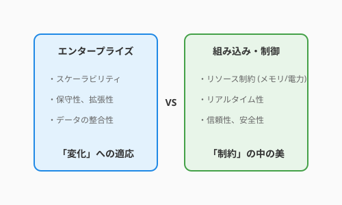

この章では、オブジェクト指向、SOLID原則、そしてクリーンアーキテクチャという、ソフトウェア設計の「王道」を学んできました。これらは、複雑な現代のソフトウェアを長期間守り抜くための最強の盾です。
しかし、アルケミスト（開発者）が扱う「コード」という魔法は、どの世界でも同じ物理法則に従うわけではありません。魔法が発動する「戦場」が変われば、重力や魔力の供給源といった前提条件そのものが一変してしまいます。
最後に、私たちが学んできた「エンタープライズ」の世界と、それとは対極の力学で動く「組み込み・制御」の世界の違いを覗いてみましょう。

Webサービス、金融システム、SNS、QuestForge（Web版）。
この世界は、常に「ユーザーの要望」という嵐にさらされています。機能は明日には追加され、仕様は来週には変わるかもしれません。
自動車のエンジン制御、スマート家電、医療機器、火星探査機。
この世界には「無限」という言葉はありません。物理的な物質の中に魔法を閉じ込める必要があります。
ここまで学んできた設計原則は、決して「絶対の教義」ではありません。
優れたアルケミストは、自分が今立っている戦場の特性を理解しています。
この章で手に入れた「設計の武器」は非常に強力です。しかし、それをいつ、どこで振るうべきか、あるいはあえて振るわないべきか。その判断力こそが、あなたを真のマスターへと導くのです。
私たちが作っている QuestForge は、基本的には「エンタープライズ」の住人です。Webを通じて多くの冒険者に届け、機能を追加し続ける必要があるからです。
しかし、もしあなたが「QuestForge専用の携帯ゲーム機（ハードウェア）」を自作し、そこでの動作を最適化しようとするなら、その瞬間にあなたは「組み込み」の聖域に足を踏み入れることになります。その時、あなたのコードから不必要な抽象化を剥ぎ取り、1バイトの節約に挑むことになるかもしれません。それもまた、エキサイティングな冒険なのです。